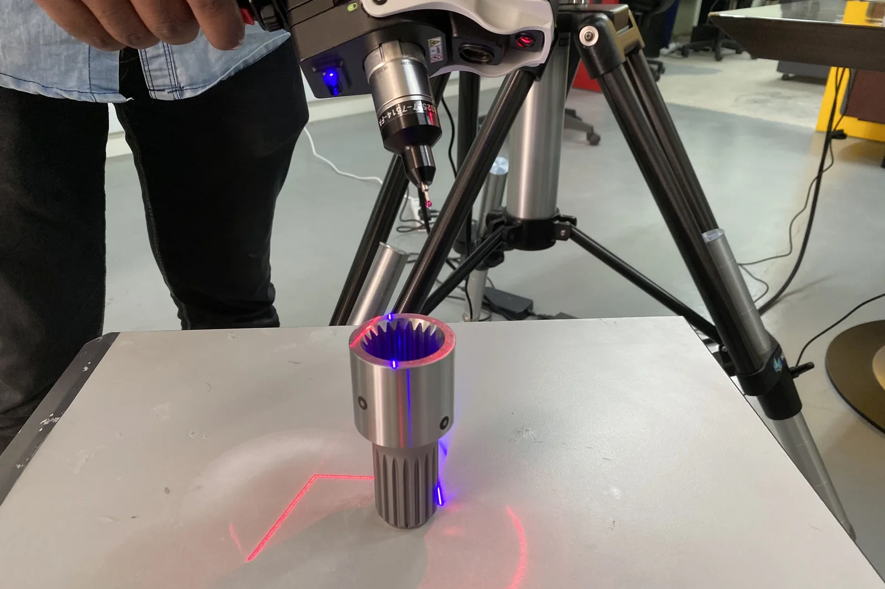
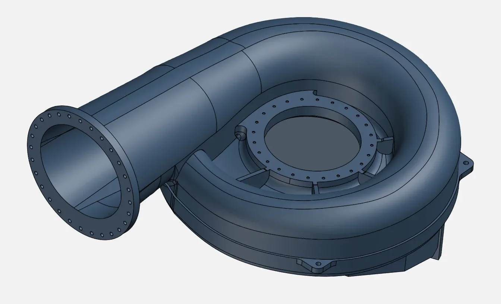
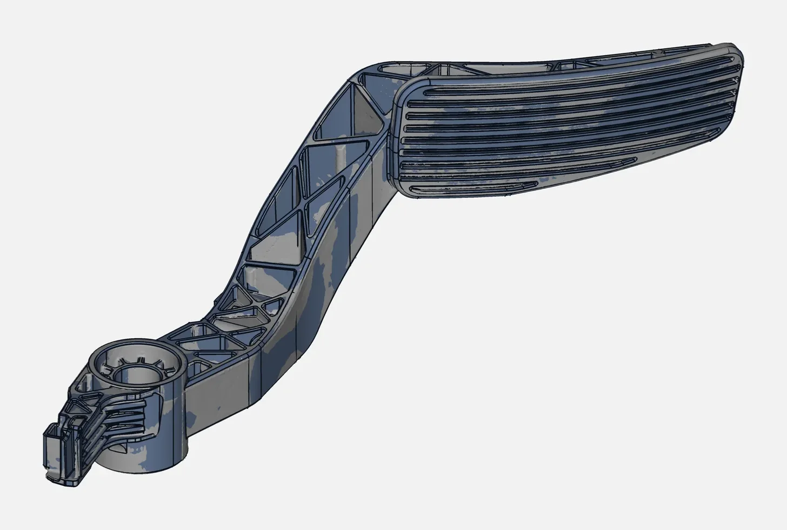
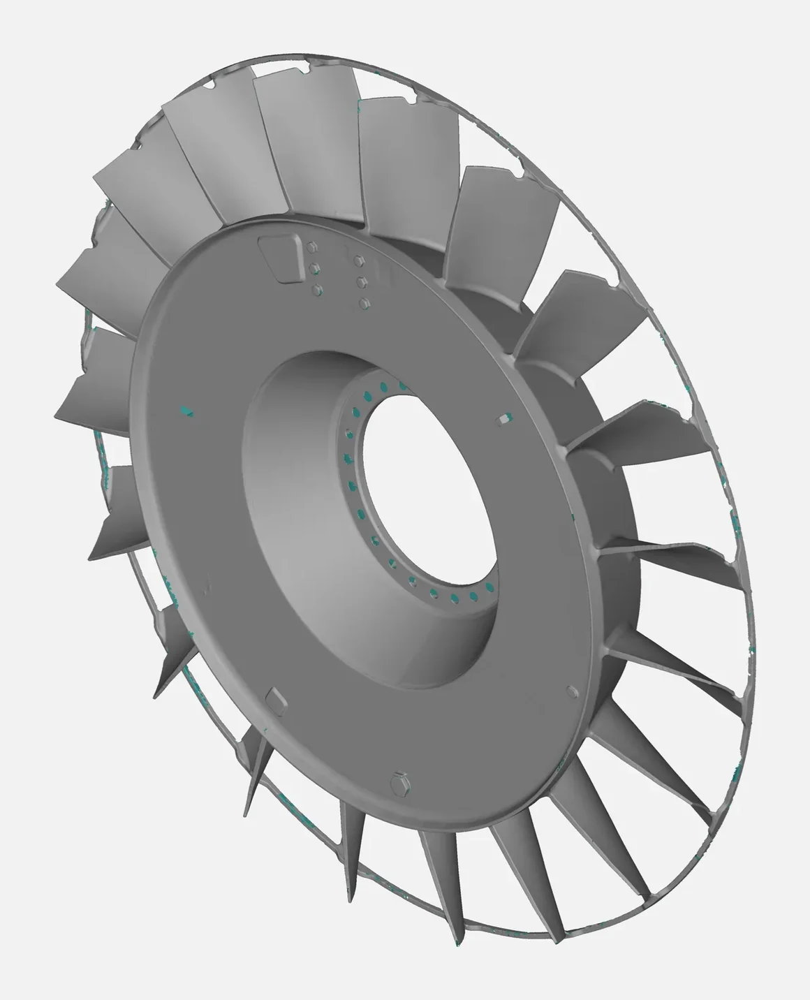
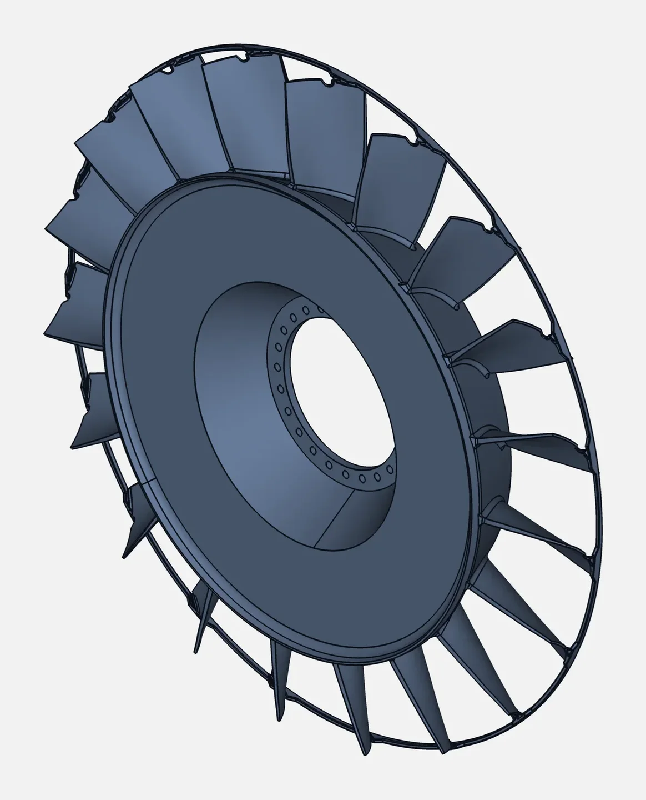

A pump casing cracks. An impeller wears out. A bracket on a 25-year-old machine snaps. The OEM no longer supports the model, the original supplier has disappeared, and there are no drawings. The plant is either down or running on borrowed time.
For maintenance teams in process plants, oil & gas, mining, cement, textiles and power across India and the Gulf, this is a familiar problem. Reverse engineering offers a reliable way out.
Why obsolete parts are such a problem
- Downtime costs more than the part. A single failed component can stop a line worth far more than the part itself.
- Imported spares take time. When spares exist at all, lead times can stretch to months.
- Copies made by eye don't fit. Measuring with calipers and remaking a part "by eye" misses curved surfaces, draft angles and hidden features.
- Knowledge leaves with people. The engineer who knew how a part was modified may have retired.
The reverse engineering route
Step 1: Scan the part (even if it is damaged)
We 3D scan the part as it is: worn, cracked or broken. For installed equipment, we can scan on site. The scan captures the exact geometry, including complex curved surfaces such as volutes and blades that are almost impossible to measure by hand.

Step 2: Rebuild the original design
The engineer reconstructs the part in CAD. Worn areas are restored to their likely original shape using:
- Symmetry and repetition: a damaged blade can be rebuilt from an intact one
- Mating parts: shafts, bearings, flanges and seals define exact fits
- Standards: flange patterns, threads and keyways follow known standards
- Your input: operating knowledge, material, and any partial drawings

Step 3: Verify before you cut metal
The new CAD model is checked against the scan, so you know the replacement will fit, before you commit to a pattern, a mould or CNC time.

Step 4: Manufacture locally
With STEP files and drawings in hand, you can get quotes from local foundries and machine shops instead of waiting for imports. You also own the data for future orders.
Example: large rotating components
Impellers and fan wheels are a classic case. The blades are freeform, twisted and often worn unevenly. Measuring them by hand is impractical. A full 3D scan captures every blade, and the CAD model can be rebuilt with a consistent blade profile, then balanced and machined.


Build a digital spare-parts library
Don't wait for the next failure. Many maintenance managers now scan critical spares proactively while the original parts are still in good condition. Each scan and CAD model goes into a digital library, so when a part fails, a replacement can be made in days rather than months.
Good candidates include:
- Parts with long import lead times
- Parts from OEMs that have exited the market
- Wear parts that are replaced regularly (liners, impellers, guides)
- Parts that have been modified on site over the years
What to prepare before you contact us
- Photos of the part from all sides, with a ruler or tape for scale
- The machine make, model and approximate age
- Material, if known, and operating conditions (temperature, pressure, media)
- How many you need, and what you need delivered: CAD, drawings, or a finished part via our manufacturing partners
Obsolete part recreation in India and the UAE
From Coimbatore, we support plants across India; for UAE and GCC clients, we can arrange on-site scanning. See related work in our portfolio, learn about reverse engineering, or WhatsApp us photos of your part.